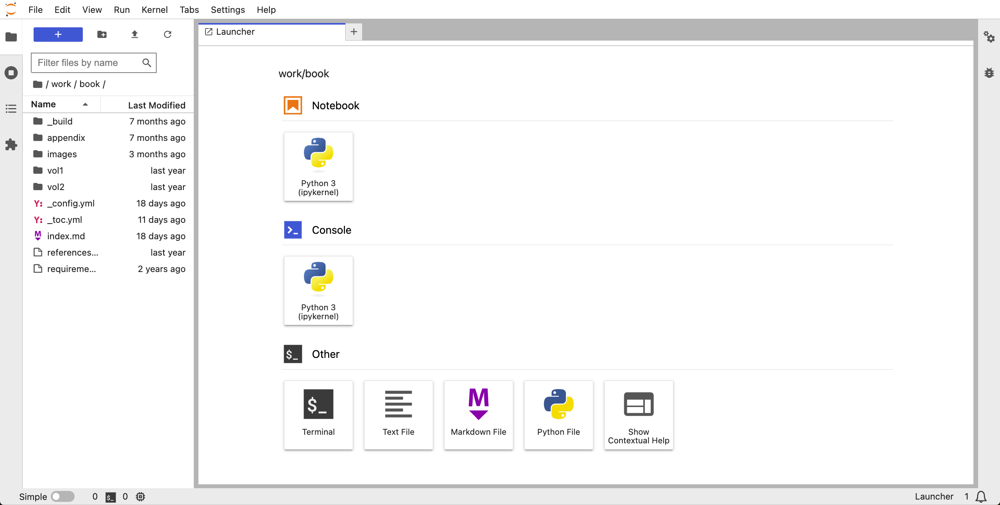

本書の再現と発展#
本章では、本書で紹介した可視化手法を再現し、発展させるための環境構築方法を解説します。
前提#
想定環境#
事前に下記がインストールされていることが前提です。
なお、私の環境は：
macOS Monterey Version 12.5
Docker version 20.10.17, build 100c701
docker-compose version 1.29.2, build 5becea4c
git version 2.39.0
です。
GitHubリポジトリのクローン#
本書のGitHubリポジトリからソースコードと前処理後のデータをダウンロードしてください。 例えば、
git clone --recursive https://github.com/kakeami/vizbook-jupyter.git
とターミナルでコマンドを打てば、vizbook-jupyterディレクトリが作成され、
再現に必要なデータとJupyter notebookが全てダウンロードされます。
--recursiveオプションを付けることで、MADB Labのデータを格納するmadbディレクトリも含めてクローンしています。
今後の分析ではmadbディレクトリがあることが前提となりますので、必ず--recursiveオプションをつけるようご注意ください。
データサイズが大きいため、ダウンロードにはしばらく時間がかかります。
最終的に、以下のようなvizbook-jupyterディレクトリをダウンロードできれば準備は完了です。
tree -L 2 vizbook-jupyter
# vizbook-jupyter
#├── Dockerfile
#├── LICENSE
#├── README.md
#├── book
#│ ├── _build
#│ ├── _config.yml
#│ ├── _toc.yml
#│ ├── appendix
#│ ├── images
#│ ├── index.md
#│ ├── references.bib
#│ ├── requirements.txt
#│ ├── vol1
#│ └── vol2
#├── build.sh
#├── data
#│ ├── an
#│ ├── cm
#│ ├── gm
#│ ├── mix
#│ └── sandbox
#├── docker-compose.yml
#├── madb
#│ ├── README.md
#│ ├── data
#│ └── doc
#└── src
# └── hide_cells.py
Jupyter Labの起動#
vizbook-jupyterディレクトリに移動し、下記のコマンドでコンテナを立ち上げてください。
sudo docker-compose up -d
このとき、パスワードの入力を求められるかもしれません。 その際、現在ログインしているユーザー（あなた自身）のパスワードを入力するようにしてください。
なお、ターミナルの仕様上、パスワードを入力しても画面には文字や * （アスタリスク）が表示されません。
カーソルが動かなくても受け付けられていますので、そのままパスワードを入力して Enter キーを押してください。
ブラウザからlocalhost:9999にアクセスすると、下図のようにパスワード入力画面が表示されます。

パスワードは1101です。
左のエクスプローラーから、work > bookの順に選択し、解析用ディレクトリに移動してください。

上図のような画面が表示されたら、準備は完了です。 以下のコマンドでコンテナを停止し、ブラウザを閉じましょう。
sudo docker-compose stop
Jupyter Labのパスワードの変更#
周知のパスワードを使い回すのは危険なので、必ず変更しましょう。
vizbook-jupyterディレクトリ直下にあるdocker-compose.ymlの最終行がパスワードに対応します。
version: "3"
services:
jupyterlab:
build:
context: .
volumes:
- "./:/home/jovyan/work"
user: root
ports:
- "9999:8888"
environment:
NB_UID: 1000
NB_GID: 1000
GRANT_SUDO: "yes"
command: start.sh jupyter lab --NotebookApp.password="sha1:4eff59f3895c:eca7017bd2f8f800bac660191a9a77413ed0a487"
最後の"sha1:4ef..."を適宜変更しましょう。
例えば45510としたい場合は、pythonで
from notebook.auth import passwd
passwd("45510", "sha1")
# 'sha1:3e37a5120c15:28f9e774cfe2bc350773d360a40daafc87dc42af'
とすればトークンを生成できます。
Caution
このまま利用せず、必ず1101あるいは45510以外のパスワード[1]を設定するようにしてください。
本書の再現#
book以下のNotebook（*.ipynb形式のファイル）と本書の対応関係は以下のとおりです[2]。
適宜コードを追加・修正することで、独自の分析を実施いただけます。
├── vol1
│ ├── 03
│ │ ├── cm_preprocess.ipynb # マンガデータの前処理（再実行不要）
│ │ ├── eda.ipynb # マンガデータの基礎分析
│ │ └── index.md
│ ├── 04
│ │ ├── amounts.ipynb # マンガデータの量を見る
│ │ ├── assocs.ipynb # マンガデータの関係を見る
│ │ ├── dists.ipynb # マンガデータの分布を見る
│ │ ├── index.md
│ │ └── props.ipynb # マンガデータの内訳を見る
│ ├── 05
│ │ ├── index.md
│ │ ├── pandas.ipynb # Pandasの基礎
│ │ ├── plotly.ipynb # Plotlyの基礎
│ │ └── python.ipynb # Pythonの基礎
│ └── 06
│ ├── an_eda.ipynb # アニメデータの基礎分析
│ ├── an_preprocess.ipynb # アニメデータの前処理（再実行不要）
│ ├── gm_eda.ipynb # ゲームデータの基礎分析
│ ├── gm_preprocess.ipynb # ゲームデータの前処理（再実行不要）
│ └── index.md
└── vol2
├── 01
│ ├── bar.ipynb # 棒グラフ
│ ├── gbar.ipynb # 集合棒グラフ
│ ├── heatmap.ipynb # ヒートマップ
│ ├── index.md
│ └── sbar.ipynb # 積上げ棒グラフ
├── 02
│ ├── box.ipynb # 箱ひげ図
│ ├── density.ipynb # 密度プロット
│ ├── hist.ipynb # ヒストグラム
│ ├── index.md
│ ├── ridge.ipynb # リッジラインプロット
│ └── violin.ipynb # バイオリンプロット
├── 03
│ ├── area.ipynb # 積上げ密度プロット
│ ├── bar.ipynb # 棒グラフ
│ ├── index.md
│ ├── mosaic.ipynb # モザイクプロット
│ ├── parallel.ipynb # パラレルセットグラフ
│ ├── pie.ipynba # 円グラフ
│ └── tree.ipynb # ツリーマップ
├── 04
│ ├── 2d.ipynb # 二次元ヒストグラム
│ ├── bubble.ipynb # バブルチャート
│ ├── connected.ipynb # 連結散布図
│ ├── contour.ipynb # 等値線図
│ ├── index.md
│ ├── line.ipynb # 折れ線グラフ
│ ├── matrix.ipynb # 散布図行列
│ └── scatter.ipynb # 散布図
├── 05
│ ├── eda.ipynb # メディア展開データの基礎分析
│ ├── index.md
│ └── mix_preprocess.ipynb # メディア展開データの前処理（再実行不要）
└── 06
├── amounts.ipynb # メディア展開データの量を見る
├── assocs.ipynb # メディア展開データの関係を見る
├── dists.ipynb # メディア展開データの分布を見る
├── index.md
└── props.ipynb # メディア展開データの内訳を見る
Note
前処理後のデータは全てvizbook-jupyter/data/*以下に格納されています。
本書の再現のため、前処理を再実行頂く必要はありません。
（仮に再実行したとしても、同じファイルが出力されるだけですので問題はありません。）
本書の発展#
やや上級者向けですが、本書の内容を発展させる方法を解説します。
分析対象の変更#
紙幅の都合上、本書では分析対象データを大幅に制限しています。 例えば、マンガデータの前処理では、以下のようにマンガ雑誌を限定しました。
# 分析対象とするマンガ雑誌名のリストを定義
MCNAMES = [
"週刊少年ジャンプ",
"週刊少年マガジン",
"週刊少年サンデー",
"週刊少年チャンピオン",
]
本書では上記を四大少年誌と呼称しましたが、もともとは上記に週刊少年キングを含めた五誌[3]が
五大（週刊）少年誌
と呼ばれていました[1]。
よって、以下のように修正してみても良いかもしれません。
# 分析対象とするマンガ雑誌名のリストを定義
MCNAMES = [
"週刊少年ジャンプ",
"週刊少年マガジン",
"週刊少年サンデー",
"週刊少年チャンピオン",
"週刊少年キング",
]
さらに言えば、分析対象を 週刊 の 少年 誌に限る理由はどこにもありません。 目的に応じて変更してみると良いでしょう。
修正後にNotebookを実行すれば、
基本的には
vizbook-jupyter/data/cm/input以下に新たな分析用データが出力されるはずですが、
状況に応じて外れ値への対応が必要になる点はご了承ください。
例えば、四大少年誌の場合は、以下のような価格の異常値への例外処理が必要でした。
def format_price(price: Optional[Any]) -> Optional[int]:
"""
price情報を整形する関数
特定の価格表現に対してはハードコーディングで既定の値を返す
Parameters
----------
price : Optional[Any]
価格情報
Returns
-------
Optional[int]
整形後の価格、priceがNoneまたは特定の形式でない場合はNoneを返す
"""
# priceがNaNの場合
if price is np.nan:
return None
# 特定の価格表現に対するハードコーディング
# 週刊少年ジャンプ 1971年 表示号数47の場合
if price == "JUMPガラガラウなかも":
return None
# 週刊少年ジャンプ 2010年 表示号数42の場合
if price == "238p":
return 238
# それ以外のprice情報を整形
price_new = price.replace("円", "").replace("+税", "")
return int(price_new)
なお、上記のformat_priceは、可読性と教育的側面を重視して実装されています。
正規表現を用いることで、より簡潔なコードが実現できる可能性もあります[4]が、本書では初学者にも理解しやすいシンプルな文字列操作を優先しました。
より重要なのは、データクレンジングの本質的な課題、すなわち予期せぬ異常値への対応です。
例えば 238p という表記が実際には 238円 を意味するのか、あるいはページ数を誤って価格列に入力したのかを判断するには、ドメイン知識が必要になります。
このような判断は、いかに高度な正規表現を用いても自動化することが難しく、個別のケースごとに対応が必要になることもしばしばです。
MCNAMESを変更することで、価格以外にも異常値が発生する可能性は考えられます。
元データを分析に適した形式に加工する作業（
データクレンジング
と呼ばれることもあります）はデータ分析で最も重要な作業の一つですので、
積極的に挑戦してみましょう。
ただし、アニメ作品とマンガ作品を対応付けるvizbook-jupyter/data/mix/external/ac_cc.csvだけは、手動で作成する必要があることにご注意ください。
なぜなら、本書のGitHubリポジトリで公開しているac_cc.csvは、四大少年誌を前提としているためです。
もし新たなMCNAMESに対してメディア展開データを作成したい場合は、acid（アニメ作品ID）に対応するccid（マンガ作品ID）を整理し直す必要があります。
また、マンガデータに限らず、アニメデータやゲームデータも、自由に変更してみましょう。
ac_cc.csvの修正#
メディア展開データの核であるvizbook-jupyter/data/mix/external/ac_cc.csvは、
以下2列からなる単純なファイルです。
acid,ccid
C10003,C92062
C10012,C91434
C10016,C91240
C10026,C92178
...
アニメ作品ID（acid）と、その原作となるマンガ作品ID（ccid）を一行ずつ格納しています。
ac_cc.csvは、筆者のドメイン知識をもとに独自に作成されたものです。
可能なかぎり正確であるよう心がけましたが、抜け・漏れや誤った情報が含まれる可能性があります。
修正すべき点が見つかった場合は、ac_cc.csvを直接編集してみましょう。